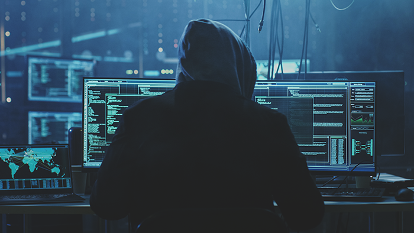

Як покращити захист акаунта в соціальних мережах?
Сьогодні майже у кожного є принаймні один обліковий запис в Facebook, Twitter, Instagram або Snapchat. За допомогою соціальних мереж ми спілкуємося з друзями, ділимося щоденними фото з близькими, стежимо за життям різних блогерів, ведемо бізнес-акаунти для комунікації з клієнтами. У зв’язку з активним використанням соцмереж та зберігання великої кількості конфіденційних даних на особистих сторінках, акаунти користувачів стають популярною ціллю для зловмисників. З кожним днем кількість атак на облікові записи користувачів зростає. Зокрема , нещодавно група кіберзлочинців OurMine отримала доступ до офіційних акаунтів Twitter футбольного клубу «Барселона» – зловмисники зламали сторінку за допомогою викрадених облікових даних. На жаль, такі випадки не рідкість. У зв'язку зі збільшенням кількості жертв подібних атак спеціалісти підготували основні рекомендації для підвищення безпеки особистих даних і захисту акаунтів в соціальних мережах.
1. Використовуйте надійний пароль для захисту акаунта.
Причиною більшості атак залишається
використання слабких паролів (ще досі найпопулярніша комбінація
серед користувачів 123456) та застосування однакового ключа для
входу до різних облікових записів.
Як правило, зловмисники здійснюють атаки методом повного перебору
(brute force), які дозволяють легко та швидко зламати навіть довгі
паролі за декілька хвилин. Крім цього, кіберзлочинці можуть використовувати
шкідливу програму для зчитування натискань клавіш на клавіатурі з
метою збирання паролів без відома користувача. Чим більше символів
містить ключова фраза, тим більше можливих комбінацій, що збільшує
час підбору пароля.
Тому важливо використовувати складний пароль, комбінуючи маловідомі фрази
з числами та різними символами. Також для кожного акаунта повинна
бути унікальна комбінація.
Ще одним способом захисту акаунта є використання менеджера паролів,
який допомагає створювати нові комбінації для входу та запам’ятовувати
вже існуючі, а також зберігати дані банківської картки.
Варто зазначити, що такі Інтернет-гіганти як Google намагаються
покращити безпеку користувачів за допомогою вимог до створення пароля
та автозаповнення.
2. Використовуйте двофакторну аутентифікацію для додаткового захисту акаунта.
Двофакторна аутентфікація (2FA) — це найпростіший спосіб створення додаткового
рівня для захисту акаунтів в соцмережах. Як правило, програми двофакторної
аутентифікації для підтвердження особистості користувача використовують
SMS-коди, повідомлення на електронну пошту та біометричні дані, такі як
відбитки пальців або сканування обличчя.
Більшість масштабних атак можна було уникнути за наявності системи двофакторної
аутентифікації на пристроях. Оскільки зловмисники не змогли б отримати доступ
до даних користувача, навіть у випадку інфікування пристрою за допомогою
шкідливого ПЗ та викрадення пароля.
Варто зазначити, що Facebook, Instagram та Twitter мають вбудовану двофакторну
аутентифікацію, яку можна увімкнути у налаштуваннях додатка.
3. Перевіряйте електронні листи на наявність підозрілих спроб входу.
Більшість соціальних мереж, наприклад Facebook та Twitter сповіщають користувачів про несанкціонований доступ до їх облікового запису. Зокрема для захисту акаунтавони блокують підозрілі спроби входу в систему та просять користувача негайно змінити пароль. Тому у разі подібних попереджень дійте швидко, щоб мінімізувати будь-які можливості використання особистих даних вашого акаунта
4. Остерігайтеся підозрілих посилань.
Зазвичай, саме користувачі через неуважність завантажують шкідливе ПЗ,
переходячи за посиланнями. Саме з цієї причини спеціалісти рекомендують
з обережністю ставитись до відкриття різних посилань в соцмережах, особливо з
такими скороченнями як Bitly або Hootsuite.
Також будьте обережні до посилань у повідомленнях електронної пошти, які
надсилаються нібито від імені соціальної мережі або іншого відомого
джерела. Крім цього, у випадках переходу на підозрілу сторінку, яка
здається недоречною, рекомендується швидко закрити вкладку браузера
і ні в якому разі не натискати ніяких кнопок на цій сторінці. Таким
чином можуть здійснюватися атаки виду «клікджекінг», під час яких
зловмисники використовують приховані елементи на веб-сторінках для
маніпуляції діями користувача і в подальшому отримання доступу до
його даних.
5. Обмежте поширення особистих даних в соцмережах.
Для захисту акаунта важливо контролювати публікування персональної інформації про себе та своїх друзів в соціальних мережах. Крім цього, варто не забувати про налаштування конфіденційності в особистому профілі, так як ваша сторінка може бути відкрита для всіх віртуальних друзів, незалежно від того, чи дійсно ви товаришуєте. Така загальнодоступна інформація може бути використана для шахрайства, зокрема за допомогою методів соціальної інженерії зловмисники можуть отримати фінансову вигоду.
VPN-сервіси
VPN-сервіси знадобляться під час користування незахищеними
загальнодоступними мережами Wi-Fi, щоб захистити свої дані,
коли ви користуєтеся фінансовими сервісами.
Крім того, Держспецзв’язку рекомендує використовувати VPN-сервіси
українцям на тимчасово окупованих територіях, щоб захистити себе
та уникнути стежіння з боку росії. Зокрема, використання VPN – один
із якісних способів захистити ваше спілкування, наприклад, у соціальних
мережах.
VPN-сервіси використовують для захисту даних та власної безпеки.
- Ця технологія приховує вашу ІР-адресу, замінюючи її на публічну ІР-адресу вашого VPN-сервісу, а отже – приховує ваше місцезнаходження.
- VPN шифрує всі ваші дані. Таке шифрування запобігає отримання хакерами доступу до важливої інформації, яку ви вводите на вебсайтах, наприклад, логінів та паролів, даних платіжних карток тощо.
- VPN запобігає завантаженню шкідливих програм на ваш пристрій та забезпечує захист під час підключення до загальнодоступних Wi-Fi-мереж
Тобто VPN – це віртуальна приватна мережа, що убезпечує вашу ІР-адресу.
Якщо ви вирішили установити VPN-сервіс на ваш пристрій, відповідально
підійдіть до його вибору. Платні сервіси можуть мати кращий рівень захисту,
вищу швидкість з’єднання, підтримку більшої кількості операційних систем
порівняно з безкоштовними.
Надавайте перевагу інтернету від мобільного оператора або домашній мережі Wi-Fi.
Шахраї можуть створювати дублікати загальнодоступних мереж Wi-Fi та, перебуваючи в одній мережі з вами, перехоплювати дані платіжних карток, паролі та повідомлення. Дотримуйтеся простих порад, щоб не потрапити до рук шахраїв:
- не здійснюйте банківські операції, коли підключені до загальнодоступної мережі Wi-Fi;
- не використовуйте мережі Wi-Fi, що просять авторизуватися за номером телефону, електронною поштою або через соцмережі: цим можуть скористатися зловмисники;
- вимкніть на вашому пристрої опцію автоматичного підключення до загальнодоступних мереж Wi-Fi.
Щоб захистити домашню мережу Wi-Fi від хакерських атак, вжийте додаткових заходів захисту. Обирайте роутер із найновішим протоколом безпеки WPA3. Надійні також маршрутизатори з WPA2. Вимкніть функцію WPS (Wi-Fi protected setup) та приховайте трансляцію імені мережі (Hidden SSID).